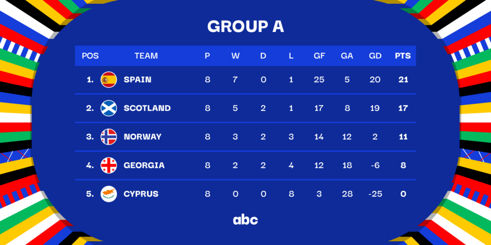

In qualifiers group stage Georgia was in one of the most strong groups
every team has to play 8 games. of course there was favourites, spain that got 21pts
this group was so hard for georgia becaus of loosing to spain home 7-1
but georgia is country that never gives up
one of the last games was with cyprus that georgia won 4-0
this game was important for georgia for team spirit
Georgia do not got enough point to qualifie
so there was last hope that georgia got nominated best team in NATIONS LEAGUE
georgia last hope was NATIONS LEAGUE
in NATIONS LEAGUE georgia played very well and got nominated the best team
so Georgia got second chance to got qualifie to EURO 2024
georgai need to win 2 games

bouth georgai games will be in georgia so georgia need to win against luxemburg and greece/kazakhsant
first game was agains luxembourg in march 21
it was pretty wasy game for georgia and they won 2-0
because of Budu Zivzivadze thats scored double

last game was agains greece on 26 march
this was one of the most important game for whole georgia
everyone in georgia were watching this game
in 120 minutes it was 0-0 so there gona be penalties
first penalty for georgia was taken by qochorashvili and this penalty was a banger no chance for greece GK
greece first penalty was saved by Giorgi MamardaShvili that gave georgia team spirit
than every single one take there penaly so good until Mikautadze mised
after Mikautadze mised it was 2-2
after that greece player missed his shot that means that if kvekveskiri score georgia will qualify to EURO 2024
shoot.... greece GK jumped to ball that was moment that every georgia nstoped breathing and then than HE SCORED!!!!!!
THAT WAS SENSATIUONAL GEORGIA QUALIFIED TO EURO FIRST TIME IN THE HISTORY